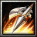

- 主要屬性 力量
攻擊範圍 128
- 基礎護甲 5
基礎攻速 1.8
- 基礎攻擊 119 - 137
基礎跑速 310
信房的出身是正統甲斐武將，父親是甲斐武士遠江守信保，其後由於武田家譜代家臣馬場虎貞向信玄的父親信虎諫言，故入籍馬場家，因而改名為馬場信春。 1546年更以「旗本組侍大將持有騎馬五十騎」的獎勵受到拔擢，同時受信玄之命改名信房。第四次川中島之戰，信房擔任妻女山攻擊機動隊，率一百二十騎重創越後上杉軍，勇名大噪，另外在武田信玄重擊德川家康的三方原之戰中，信房與山縣昌景、內藤昌豊擔任頭陣，對家康軍瘋狂追擊，功績第一。1564年武田名將「鬼美濃」原虎胤死後，信玄命信房繼承鬼美濃的武名，並受封美濃守信房。
-

-
W
破空波
-
105/125/145/165
-
9
對著指定方向發出一道破空波，可以造成(250/350/450/550)的傷害。
解放殺意來增加30%的移動速度以及(35/60/85/110)%攻擊速度，周圍生命值低於65%的敵軍將會因懼怕而暈眩1.5秒。殺意持續(4/8/12/16)秒。
使自身護甲提昇(1/3/5/7)，並且當被敵軍攻擊時，攻擊者將會受到(21/34/47/60)的傷害。
反彈傷害為絕對傷害。
永久的提升力量(15/20/25)點，並且自身生命值每降低20%，便可以提高(35/45/65)的攻擊力以及(4/6/12)裝甲。
學習等級為6/12/18。
永久性的提升(3/6/9/12)靈活、智慧和力量。